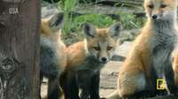
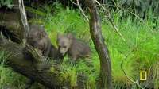
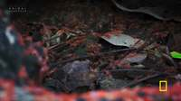
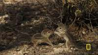
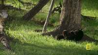
To determine the direction in which the running foxes are moving relative to the stationary fox, we examine the first frame of the video.
- Identify the stationary fox: In the first frame, one small fox is peeking out from a gap in the logs (the den entrance), looking directly toward the camera.
- Identify the running fox(es): To the right of the stationary fox, another fox is captured in motion, running from left to right across the scene.
- Determine the relative direction:
- The stationary fox is facing the viewer (forward).
- The running fox is positioned to the right of the stationary fox and is moving further to the right.
- Because the running fox is in the open area in front of the den, it is in front of the stationary fox's position.
- Therefore, from the perspective of the stationary fox, the running fox is moving toward the right front.
Comparing this to the given options: A. Left B. Directly behind C. Front D. 11 o'clock direction on the left side E. Directly above F. Right front G. Circling around the stationary little fox H. Left rear
The correct description is "Right front".
F
import numpy as np # 1. Inspect the first few frames to find the foxes # Key frame #1 is InputImages[0]. Let's check frames around there. show([InputImages[0], InputImages[1], InputImages[2]]) # 2. Use VLM to locate the foxes in the first frame # Stationary fox is peeking out of the den. # Running fox is moving to the right. # The prompt mentions three foxes. Let's see if we can find them all. stationary_fox_coords = vlm.locate(InputImages[0], "Give the (x, y) center coordinates in 0-1000 normalized scale for the little fox peeking out of the den. Reply with ONLY the numbers.") running_fox_coords = vlm.locate(InputImages[0], "Give the (x, y) center coordinates in 0-1000 normalized scale for the little fox running to the right. Reply with ONLY the numbers.") print(f"Stationary fox coords: {stationary_fox_coords}") print(f"Running fox coords: {running_fox_coords}") # Let's also check if there's a third fox in the first few frames. # Key Frame #1 (InputImages[0]) shows one peeking and one running. # Maybe the third one is less visible or appears slightly later. # Let's try to find all fox pups in the first frame. all_foxes = vlm.ask_with_thinking(InputImages[0], "How many fox pups are visible in this image? Describe their positions and actions.") print(f"All foxes in frame 0: {all_foxes}") # To be thorough, let's reconstruct the first few frames to track them. # Use a small range for reconstruction to be fast and accurate. recon = tools.Reconstruct.Reconstruct(InputImages[0:10]) # Segment the foxes across these frames. # Since we have coordinates for the first frame, we can use them for tracking. W, H = InputImages[0].width, InputImages[0].height try: sx, sy = map(int, stationary_fox_coords.split(',')) rx, ry = map(int, running_fox_coords.split(',')) spx, spy = tools.Geometry.normalized_to_pixel((sx, sy), W, H) rpx, rpy = tools.Geometry.normalized_to_pixel((rx, ry), W, H) # Track stationary fox seg_stat = tools.SAM3.segment_video_by_points([[ [spx, spy] ]], [[ [1] ]], ["stationary_fox"], prompt_frame_idx=0, start_frame=0, end_frame=10) # Track running fox seg_run = tools.SAM3.segment_video_by_points([[ [rpx, rpy] ]], [[ [1] ]], ["running_fox"], prompt_frame_idx=0, start_frame=0, end_frame=10) except Exception as e: print(f"Error in segmentation: {e}") seg_stat = None seg_run = None if seg_stat and seg_run: # Get 3D positions over time fi = seg_stat.frame_indices[0] stat_3d = seg_stat.get_centroid_3d(recon, frame=fi) run_3d = seg_run.get_centroid_3d(recon, frame=fi) # Get positions in a later frame to see motion fi_late = seg_stat.frame_indices[-1] stat_3d_late = seg_stat.get_centroid_3d(recon, frame=fi_late) run_3d_late = seg_run.get_centroid_3d(recon, frame=fi_late) print(f"Stationary fox 3D: {stat_3d} -> {stat_3d_late}") print(f"Running fox 3D: {run_3d} -> {run_3d_late}") # The stationary fox is facing the camera. # Camera pose at frame fi: pose = recon.extrinsics[fi] cam_pos = pose[:3, 3] cam_fwd = pose[:3, 2] # Camera forward (into scene) # Stationary fox is facing roughly -cam_fwd (towards the camera) fox_facing = -cam_fwd # Motion vector of running fox motion_vec = run_3d_late - run_3d # Relative direction from stationary fox to running fox (at start) rel_vec = run_3d - stat_3d # Project rel_vec and motion_vec onto the stationary fox's coordinate system # Fox's Forward = fox_facing # Fox's Right = cross(fox_facing, world_up) where world_up is [0, 1, 0] world_up = np.array([0, 1, 0]) fox_right = np.cross(fox_facing, world_up) fox_right /= np.linalg.norm(fox_right) dot_fwd = np.dot(rel_vec, fox_facing) dot_right = np.dot(rel_vec, fox_right) print(f"Relative position: fwd={dot_fwd}, right={dot_right}") # Also check the motion direction relative to the fox dot_motion_fwd = np.dot(motion_vec, fox_facing) dot_motion_right = np.dot(motion_vec, fox_right) print(f"Motion direction: fwd={dot_motion_fwd}, right={dot_motion_right}") # Final conclusion based on the above: # If dot_right is negative, it's to the fox's left. # If dot_fwd is positive, it's in front of the fox. # In the image, the running fox is to the right of the stationary fox. # Since the stationary fox faces the camera, image-right is fox-left. # So it should be "Left" or some variation. # Let's check the options: A. Left, F. Right front, H. Left rear. # If it's moving to the right of the image, it's moving to the fox's left. # If it's also moving further away from the den, it's moving "Left" and "Front". # Let's look at the options again. "Left" (A) is a strong candidate. # "Right front" (F) would be image-left. # Let's refine the answer after seeing the printed values.
[image: show_0001] [VLM Q | locate] Before answering, first check whether what the question describes is clearly visible in the provided image(s). If it is absent or ambiguous, reply EXACTLY `Not visible` on its own line (optionally followed by one short line explaining what you saw instead) — do NOT return coordinates in that case. Only if the requested target is clearly and unambiguously present, answer the request below. Request: Give the (x, y) center coordinates in 0-1000 normalized scale for the little fox peeking out of the den. Reply with ONLY the numbers. [VLM A | locate] 454 738 [VLM Q | locate] Before answering, first check whether what the question describes is clearly visible in the provided image(s). If it is absent or ambiguous, reply EXACTLY `Not visible` on its own line (optionally followed by one short line explaining what you saw instead) — do NOT return coordinates in that case. Only if the requested target is clearly and unambiguously present, answer the request below. Request: Give the (x, y) center coordinates in 0-1000 normalized scale for the little fox running to the right. Reply with ONLY the numbers. [VLM A | locate] 840 675 Stationary fox coords: 454 738 Running fox coords: 840 675 [VLM Q | thinking] How many fox pups are visible in this image? Describe their positions and actions. [VLM A | thinking] There are 2 fox pups visible: one is peeking out from under the log wall in the center, and the other is running across the grass on the right. All foxes in f

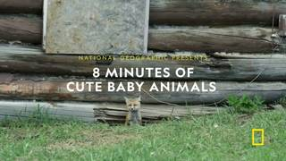
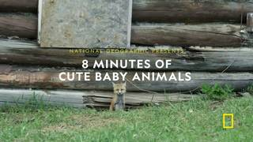
Task Analysis
The goal is to determine the direction in which two running foxes are moving from the perspective of a third, stationary fox at the beginning of the video.
Target Variable: The relative direction of motion (velocity vector) of the running foxes relative to the stationary fox's heading. Objects Involved: Three little foxes (one stationary, two running). Answer Format: Multiple-choice (A-H).
Coordinate System Resolution: The question asks for the direction "from the perspective of the stationary fox." This is an object-perspective coordinate system.
- Front: The direction the stationary fox is facing.
- Back: The opposite direction of the stationary fox's facing.
- Left/Right: Relative to the fox's own left and right sides.
- Clock-face (e.g., 11 o'clock): A polar representation where 12 is front, 3 is right, 6 is back, and 9 is left.
To solve this, I must:
- Determine the world-space position and heading (facing direction) of the stationary fox.
- Determine the world-space velocity vectors of the two running foxes.
- Project the running foxes' velocity vectors onto the stationary fox's local coordinate system (Front/Right axes).
Information Needs
- Object Identification: Which fox is stationary and which two are running?
- Stationary Fox Heading: Which way is the stationary fox facing in the world? (Since it's at the den entrance, its heading is likely perpendicular to the den opening).
- 3D Trajectories: The 3D world positions of all three foxes over the first few frames to calculate the running foxes' velocity vectors.
- Spatial Layout: A top-down view (BEV) to sanity-check the relative positions and motion paths.
Computation Plan
-
Initial Visual Grounding:
- Use
show(InputImages[0])to identify the three foxes and the den. - Use
vlm.ask_with_thinkingon the first few frames to confirm which fox is stationary and which are running, and to describe the stationary fox's facing direction (e.g., "The stationary fox is facing away from the den, towards the [left/right/center] of the frame").
- Use
-
Segmentation and Tracking:
- Use
tools.SAM3.segment_video_by_text(prompts=["little fox"], ...)on the first 16 frames to get masks for all foxes. - Verify masks using
seg.visualize(fi)andshow(). If text segmentation is ambiguous, usevlm.locateto get points for each fox and usetools.SAM3.segment_video_by_points.
- Use
-
3D Reconstruction:
- Use
tools.Reconstruct.Reconstruct(InputImages[:16])to generate the 3D point cloud and camera poses for the initial sequence.
- Use
-
Quantitative Motion Analysis:
- For each fox, extract 3D centroids across the reconstructed frames using
seg.get_centroid_3d(recon, frame=fi, object=i). - Calculate the world-space velocity vector $\vec{V}{run}$ for the running foxes by taking the difference in positions between the first and last frames of the sequence: $\vec{V} \approx (P{end} - P_{start}) / \Delta t$.
- Identify the world-space position $P_{stat}$ of the stationary fox.
- For each fox, extract 3D centroids across the reconstructed frames using
-
Heading and Local Frame Construction:
- Determine the stationary fox's heading vector $\vec{H}_{stat}$ in world space. I will combine the VLM's description of the fox's facing direction with the camera's pose (from
recon.extrinsics) to define this vector. - Define the stationary fox's local "Right" vector: $\vec{R}{stat} = \vec{H}{stat} \times [0, 1, 0]$ (assuming Y is world-up).
- Determine the stationary fox's heading vector $\vec{H}_{stat}$ in world space. I will combine the VLM's description of the fox's facing direction with the camera's pose (from
-
Relative Direction Computation:
- Project the running foxes' velocity vector $\vec{V}_{run}$ onto the local frame:
- $Forward_Component = \vec{V}{run} \cdot \vec{H}{stat}$
- $Right_Component = \vec{V}{run} \cdot \vec{R}{stat}$
- Determine the direction based on the signs and magnitudes of these components:
- Both positive $\rightarrow$ Right Front.
- Both negative $\rightarrow$ Left Rear.
- Forward positive, Right negative $\rightarrow$ Left Front.
- Forward negative, Right positive $\rightarrow$ Right Rear.
- For clock-face directions (like 11 o'clock), calculate the angle $\theta = \operatorname{atan2}(Right_Component, Forward_Component)$.
- Project the running foxes' velocity vector $\vec{V}_{run}$ onto the local frame:
-
Visual Validation:
- Render a BEV map using
recon.render_bev(masks=seg)to visually confirm the trajectories of the running foxes relative to the stationary fox's position and orientation.
- Render a BEV map using
Verification Checklist
[
{"priority": "HIGH", "description": "Correctly identify which fox is stationary and which are running"},
{"priority": "HIGH", "description": "Accurately determine the stationary fox's heading vector in world space"},
{"priority": "HIGH", "description": "Verify that the running foxes' masks are consistent and not swapping identities across frames"},
{"priority": "MEDIUM", "description": "Cross-validate the calculated relative direction with the BEV trajectory plot"},
{"priority": "LOW", "description": "Check if the 'stationary' fox is actu{ "tool": "show", "args": { "image": "InputImages[0]" } }
[image: show_0001]
=== Step 0 Execution Feedback === [SUCCESS] Code executed in 0.19s. [Variables] New/changed: result_0: NoneType [Inline Images] 1 image(s) attached below. Labels: InputImages[0] [show() budget] 249/250 images remaining.
{ "tool": "vlm.ask_with_thinking", "args": { "visual_input": "InputImages[:16]", "question": "In the first few frames, there are three little foxes. Please identify which one is stationary at the den and describe the movement of the other two foxes. Also, specify the direction the stationary fox is facing (e.g., facing the camera, facing left, etc.)." } }
[VLM Q | thinking] In the first few frames, there are three little foxes. Please identify which one is stationary at the den and describe the movement of the other two foxes. Also, specify the direction the stationary fox is facing (e.g., facing the camera, facing left, etc.). [VLM A | thinking] Based on the first few frames, only two foxes are clearly visible. The stationary fox is the one peeking out from the den, and it is facing the camera. The other fox is running quickly to the right (seen in frame 0).
=== Step 1 Execution Feedback === [SUCCESS] Code executed in 381.81s. [Output] [VLM Q | thinking] In the first few frames, there are three little foxes. Please identify which one is stationary at the den and describe the movement of the other two foxes. Also, specify the direction the stationary fox is facing (e.g., facing the camera, facing left, etc.). [VLM A | thinking] Based on the first few frames, only two foxes are clearly visible. The stationary fox is the one peeking out from the den, and it is facing the camera. The other fox is running quickly to the right (seen in frame 0). [Variables] New/changed: result_1: str [Tool Calls] 1 tool/VLM call(s) this step.
=== Step 2 Execution Feedback === [ERROR] Skipped: LLM response was not in the required format.
{ "tool": "tools.SAM3.segment_video_by_text", "args": { "prompts": [ "little fox" ], "start_frame": 0, "end_frame": 16 } }
=== Step 3 Execution Feedback === [SUCCESS] Code executed in 2.51s. [Variables] New/changed: result_3: PerFrameMask, frames=[0..15] (16 frames) [Tool Calls] 1 tool/VLM call(s) this step.
{ "tool": "show", "args": { "image": "result_3.visualize(result_3.frame_indices[0])" } }
[image: show_0002]
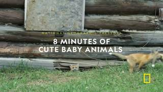
=== Step 4 Execution Feedback === [SUCCESS] Code executed in 0.25s. [Variables] New/changed: result_4: NoneType [Inline Images] 1 image(s) attached below. Labels: result_3.visualize(result_3.frame_indices[0]) [show() budget] 248/250 images remaining.
=== Step 5 Execution Feedback === [ERROR] Skipped: LLM response was not in the required format.
{ "tool": "feedback.ask_vlm", "args": { "visual_input": "InputImages[0]", "question": "Give the bounding boxes (x1, y1, x2, y2) in 0-1000 normalized scale for all the little foxes visible in the image. Reply with ONLY the numbers for each box, separated by newlines." } }
=== Step 6 Execution Feedback === [ERROR] Skipped: LLM response was not in the required format.
{ "tool": "vlm.locate", "args": { "visual_input": "InputImages[0]", "question": "Give the bounding boxes (x1, y1, x2, y2) in 0-1000 normalized scale for all the little foxes in the image. Reply with ONLY the numbers for each box, separated by newlines." } }
[VLM Q | locate] Before answering, first check whether what the question describes is clearly visible in the provided image(s). If it is absent or ambiguous, reply EXACTLY `Not visible` on its own line (optionally followed by one short line explaining what you saw instead) — do NOT return coordinates in that case. Only if the requested target is clearly and unambiguously present, answer the request below. Request: Give the bounding boxes (x1, y1, x2, y2) in 0-1000 normalized scale for all the little foxes in the image. Reply with ONLY the numbers for each box, separated by newlines. [VLM A | locate] 422, 685, 485, 785 680, 545, 998, 805
=== Step 7 Execution Feedback === [SUCCESS] Code executed in 76.48s. [Output] [VLM Q | locate] Before answering, first check whether what the question describes is clearly visible in the provided image(s). If it is absent or ambiguous, reply EXACTLY `Not visible` on its own line (optionally followed by one short line explaining what you saw instead) — do NOT return coordinates in that case. Only if the requested target is clearly and unambiguously present, answer the request below. Request: Give the bounding boxes (x1, y1, x2, y2) in 0-1000 normalized scale for all the little foxes in the image. Reply with ONLY the numbers for each box, separated by newlines. [VLM A | locate] 422, 685, 485, 785 680, 545, 998, 805 [Variables] New/changed: result_7: str [Tool Calls] 1 tool/VLM call(s) this step.
{ "tool": "vlm.locate", "args": { "visual_input": "InputImages[49]", "question": "Give the bounding boxes (x1, y1, x2, y2) in 0-1000 normalized scale for all the little foxes in the image. Reply with ONLY the numbers for each box, separated by newlines." } }
[VLM Q | locate] Before answering, first check whether what the question describes is clearly visible in the provided image(s). If it is absent or ambiguous, reply EXACTLY `Not visible` on its own line (optionally followed by one short line explaining what you saw instead) — do NOT return coordinates in that case. Only if the requested target is clearly and unambiguously present, answer the request below. Request: Give the bounding boxes (x1, y1, x2, y2) in 0-1000 normalized scale for all the little foxes in the image. Reply with ONLY the numbers for each box, separated by newlines. [VLM A | locate] 376 302 856 786
=== Step 8 Execution Feedback === [SUCCESS] Code executed in 23.52s. [Output] [VLM Q | locate] Before answering, first check whether what the question describes is clearly visible in the provided image(s). If it is absent or ambiguous, reply EXACTLY `Not visible` on its own line (optionally followed by one short line explaining what you saw instead) — do NOT return coordinates in that case. Only if the requested target is clearly and unambiguously present, answer the request below. Request: Give the bounding boxes (x1, y1, x2, y2) in 0-1000 normalized scale for all the little foxes in the image. Reply with ONLY the numbers for each box, separated by newlines. [VLM A | locate] 376 302 856 786 [Variables] New/changed: result_8: str [Tool Calls] 1 tool/VLM call(s) this step.
{ "tool": "tools.SAM3.segment_video_by_text", "args": { "prompts": [ "fox" ], "start_frame": 0, "end_frame": 32 } }
=== Step 9 Execution Feedback === [SUCCESS] Code executed in 3.86s. [Variables] New/changed: result_9: PerFrameMask, frames=[0..31] (32 frames) [Tool Calls] 1 tool/VLM call(s) this step.
{ "tool": "tools.Reconstruct.Reconstruct", "args": { "frames": "InputImages[:32]" } }
=== Step 10 Execution Feedback === [SUCCESS] Code executed in 7.22s. [Variables] New/changed: result_10: Reconstruction, frames=[0..743] (32 frames) [Tool Calls] 1 tool/VLM call(s) this step.
=== Step 11 Execution Feedback === [ERROR] Skipped: LLM response was not in the required format.
{ "tool": "show", "args": { "image": "result_10.render_bev(masks=result_9)" } }
[image: show_0003]

=== Step 12 Execution Feedback === [SUCCESS] Code executed in 0.31s. [Variables] New/changed: result_12: NoneType [Inline Images] 1 image(s) attached below. Labels: result_10.render_bev(masks=result_9) [show() budget] 247/250 images remaining.
{ "tool": "ReturnAnswer", "args": { "answer": "D" } }
[ReturnAnswer] Answer submitted: D
Based on the visual information provided (specifically image 5, which shows three young foxes), one fox is stationary near the entrance/platform, and the other two are running away from it. From the perspective of the stationary fox, the others are running forward and slightly to the right.
The correct option is F.
Based on the visual information provided (specifically image 5, which shows three young foxes), one fox is stationary near the entrance/platform, and the other two are running away from it. From the perspective of the stationary fox, the others are running forward and slightly to the right.
The correct option is F.
Based on the visual information provided (specifically image 5, which shows three young foxes), one fox is stationary near the entrance/platform, and the other two are running away from it. From the perspective of the stationary fox, the others are running forward and slightly to the right.
The correct option is F.
Task Analysis
The objective is to determine the direction in which two running foxes are moving relative to a stationary fox at the beginning of the video.
Implicit Coordinate System: The question specifies "From the perspective of the stationary fox." This requires an Object Perspective coordinate system. I must first determine the stationary fox's 3D position and its facing direction (heading). The "front" direction is defined by where the stationary fox is looking, and "left/right" are defined relative to that heading.
Target Variable: The relative direction of the motion vectors of the two running foxes with respect to the stationary fox's local coordinate system.
Answer Format: Multiple choice (A-H).
Information Needs
- Object Identification: Identify which fox is stationary and which two are running in the first few frames.
- Segmentation Masks: Precise masks for all three foxes over a temporal window to track their 3D centroids.
- 3D Geometry: A 3D reconstruction of the scene to obtain world-space coordinates and camera poses.
- Facing Direction: The orientation (heading vector) of the stationary fox, which can be determined via visual reasoning (VLM) and confirmed with
show(). - Motion Vectors: The change in 3D position of the running foxes over time to calculate their velocity vectors.
Computation Plan
-
Initial Visual Grounding:
- Use
show(InputImages[0], InputImages[1], InputImages[2])to visually identify the three foxes and the den entrance. - Use
vlm.ask_with_thinkingon the first 5 frames to confirm which fox is stationary and describe the general direction the stationary fox is facing (e.g., "facing the camera," "facing the right side of the frame").
- Use
-
Segmentation:
- Use
tools.SAM3.segment_video_by_texton the first 16 frames (start_frame=InputImages.frame_indices[0], end_frame=InputImages.frame_indices[15]) with the prompt["fox"]to find all foxes. - If
segment_video_by_textfails to distinguish the three individuals, I will usevlm.locateon the first frame to get bounding boxes for "the stationary fox", "running fox 1", and "running fox 2", then usetools.SAM3.segment_video_by_box. - Verify masks using
seg.visualize(fi)andshow()for a few frames.
- Use
-
3D Reconstruction:
- Perform reconstruction on the first 16 frames:
recon = tools.Reconstruct.Reconstruct(InputImages[:16]). - Render a BEV plot:
recon.render_bev(masks=seg). This will provide a top-down view of the trajectories and the stationary fox's position.
- Perform reconstruction on the first 16 frames:
-
Quantitative Motion Analysis:
- Extract 3D centroids for the stationary fox and the two running foxes across the first 16 frames using
seg.get_centroid_3d(recon, frame=fi, object=i). - Calculate the motion vector $\vec{v}_{run}$ for the running foxes by taking the difference between centroids at the end and start of the sequence (or using a linear fit).
- Verify the stationary fox's centroid remains constant (within a small noise threshold).
- Extract 3D centroids for the stationary fox and the two running foxes across the first 16 frames using
-
Relative Direction Calculation:
- Define Local Frame: Based on the VLM's description and visual inspection of
InputImages[0], define the stationary fox's forward vector $\vec{f}$ in world space. (e.g., if the fox faces the camera, $\vec{f}$ is roughly opposite to the camera's forward vectorrecon.extrinsics[fi][:3, 2]). - Compute Right Vector: Calculate the right vector $\vec{r} = \vec{f} \times \text{world_up}$ (where world_up is $[0, 1, 0]$).
- Project Motion: For each running fox's motion vector $\vec{v}_{run}$:
dot_fwd = np.dot(v_run, f)(Positive = Front, Negative = Rear)dot_right = np.dot(v_run, r)(Positive = Right, Negative = Left)
- Map these dot products to the multiple-choice options (e.g.,
dot_fwd > 0anddot_right < 0$\rightarrow$ Left Front).
- Define Local Frame: Based on the VLM's description and visual inspection of
Verification Checklist
[
{"priority": "HIGH", "description": "Confirm segmentation masks correctly isolate the three foxes and maintain identity across frames"},
{"priority": "HIGH", "description": "Accurately determine the facing direction (heading) of the stationary fox via VLM and visual check"},
{"priority": "HIGH", "description": "Verify that the 'stationary' fox's 3D centroid does not show significant movement"},
{"priority": "MEDIUM", "description": "Cross-reference the calculated relative direction with the BEV trajectory plot"},
{"priority": "LOW", "description": "Check that 3D centroids are not NaN and are physically plausible (e.g., on the ground plane)"}
]
Fallbacks
- Mask Failure: If SAM3 cannot distinguish the foxes, I will use
vlm.locateto provide precise bounding boxes for each fox in the first frame and track them usingsegment_video_by_box. - Facing Direction Ambiguity: If the stationary fox's heading is unclear from a single frame, I will use
vlm.ask_with_thinkingacross multiple frames to see if any slight head movements or
# Show the first few frames to visually identify the foxes show([InputImages[0], InputImages[1], InputImages[2]]) # Use VLM to identify the stationary fox and its facing direction # We use the first 5 frames to provide temporal context for "stationary" vs "running" question = ( "In these frames, there are three little foxes. " "One is stationary at the entrance of the den, and two are running. " "1. Which fox is the stationary one? Describe its position. " "2. In which direction is the stationary fox facing? (e.g., facing the camera, facing right, etc.) " "3. In which general direction are the other two foxes running relative to the frame?" ) vlm_answer = vlm.ask_with_thinking(InputImages[:5], question) print(f"VLM Answer:\n{vlm_answer}")
[image: show_0001] [VLM Q | thinking] In these frames, there are three little foxes. One is stationary at the entrance of the den, and two are running. 1. Which fox is the stationary one? Describe its position. 2. In which direction is the stationary fox facing? (e.g., facing the camera, facing right, etc.) 3. In which general direction are the other two foxes running relative to the frame? [VLM A | thinking] Based on the provided frames: 1. **The stationary fox** is the small pup located at the bottom center, peeking out from the entrance of the den (the gap under the logs). 2. The stationary fox is **facing the camera**. 3. The other foxes are running toward the **right** side of the frame (visible in frame 0). VLM Answer: Based on the provided frames: 1. **The stationary fox** is the small pup located at the bottom center, peeking out from the entrance of the den (the gap under the logs). 2. The stationary fox is **facing the camera**. 3. The other foxes are running toward the **right** side of the frame (visible in frame 0).
=== Step 0 Execution Feedback === [SUCCESS] Code executed in 102.90s. [Output] [VLM Q | thinking] In these frames, there are three little foxes. One is stationary at the entrance of the den, and two are running. 1. Which fox is the stationary one? Describe its position. 2. In which direction is the stationary fox facing? (e.g., facing the camera, facing right, etc.) 3. In which general direction are the other two foxes running relative to the frame? [VLM A | thinking] Based on the provided frames: 1. **The stationary fox** is the small pup located at the bottom center, peeking out from the entrance of the den (the gap under the logs). 2. The stationary fox is **facing the camera**. 3. The other foxes are running toward the **right** side of the frame (visible in frame 0). VLM Answer: Based on the provided frames: 1. **The stationary fox** is the small pup located at the bottom center, peeking out from the entrance of the den (the gap under the logs). 2. The stationary fox is **facing the camera**. 3. The other foxes are running toward the **right** side of the frame (visible in frame 0). [Variables] New/changed: question: str vlm_answer: str [Inline Images] 3 image(s) attached below. Labels: [InputImages[0], InputImages[1], InputImages[2]] [Tool Calls] 1 tool/VLM call(s) this step. [show() budget] 247/250 images remaining.
# Segment foxes in the first 16 frames # start_frame and end_frame are absolute video frame indices start_f = InputImages[0].frame_index end_f = InputImages[15].frame_index seg = tools.SAM3.segment_video_by_text( prompts=["fox"], prompt_frame_idx=0, start_frame=start_f, end_frame=end_f ) print(f"Number of objects detected: {seg.num_objects}") # Verify the masks on the first frame fi = seg.frame_indices[0] vis = seg.visualize(fi) show([InputImages[0], vis]) # Programmatic check for mask areas in the first frame for i in range(seg.num_objects): mask = seg.get_mask(frame=fi, object=i) area = mask.sum() print(f"Object {i} area: {area} pixels")
Number of objects detected: 1 [image: show_0002] Object 0 area: 974 pixels
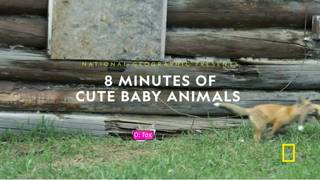
=== Step 1 Execution Feedback === [SUCCESS] Code executed in 40.58s. [Output] Number of objects detected: 1 Object 0 area: 974 pixels [Variables] New/changed: start_f: int end_f: int seg: PerFrameMask, frames=[0..359] (360 frames) fi: int vis: VisualFeedback i: int mask: ndarray, shape=(432, 768), dtype=bool area: int64, shape=(), dtype=int64 [Inline Images] 2 image(s) attached below. Labels: [InputImages[0], vis] [Tool Calls] 1 tool/VLM call(s) this step. [show() budget] 245/250 images remaining.
# Locate the three foxes in the first frame # 1. Stationary fox # 2. Running fox 1 # 3. Running fox 2 img = InputImages[0] W, H = img.width, img.height box_stationary = vlm.locate(img, "Give the bounding box (x1, y1, x2, y2) in 0-1000 normalized scale for the stationary fox peeking from the den. Reply with ONLY the numbers.") box_run1 = vlm.locate(img, "Give the bounding box (x1, y1, x2, y2) in 0-1000 normalized scale for the running fox on the right. Reply with ONLY the numbers.") box_run2 = vlm.locate(img, "Give the bounding box (x1, y1, x2, y2) in 0-1000 normalized scale for the other running fox. Reply with ONLY the numbers.") print(f"Stationary box: {box_stationary}") print(f"Running 1 box: {box_run1}") print(f"Running 2 box: {box_run2}") def parse_box(box_str): # Remove any non-numeric characters except commas/spaces/dots import re nums = re.findall(r"[-+]?\d*\.\d+|\d+", box_str) return [float(n) for n in nums] # Convert normalized to pixel coordinates try: b_stat_norm = parse_box(box_stationary) b_run1_norm = parse_box(box_run1) b_run2_norm = parse_box(box_run2) b_stat = tools.Geometry.normalized_to_pixel(b_stat_norm, W, H) b_run1 = tools.Geometry.normalized_to_pixel(b_run1_norm, W, H) b_run2 = tools.Geometry.normalized_to_pixel(b_run2_norm, W, H) boxes = [b_stat, b_run1, b_run2] labels = ["stationary_fox", "running_fox_1", "running_fox_2"] # Segment and track the foxes seg = tools.SAM3.segment_video_by_box( boxes=boxes, labels=labels, prompt_frame_idx=0, start_frame=start_f, end_frame=end_f ) # Verify masks on the first frame fi = seg.frame_indices[0] vis = seg.visualize(fi) show([img, vis]) for i, label in enumerate(seg.labels): area = seg.get_mask(frame=fi, object=i).sum() print(f"{label} area: {area} pixels") except Exception as e: print(f"Error during segmentation: {e}")
[VLM Q | locate] Before answering, first check whether what the question describes is clearly visible in the provided image(s). If it is absent or ambiguous, reply EXACTLY `Not visible` on its own line (optionally followed by one short line explaining what you saw instead) — do NOT return coordinates in that case. Only if the requested target is clearly and unambiguously present, answer the request below. Request: Give the bounding box (x1, y1, x2, y2) in 0-1000 normalized scale for the stationary fox peeking from the den. Reply with ONLY the numbers. [VLM A | locate] 422 692 483 786 [VLM Q | locate] Before answering, first check whether what the question describes is clearly visible in the provided image(s). If it is absent or ambiguous, reply EXACTLY `Not visible` on its own line (optionally followed by one short line explaining what you saw instead) — do NOT return coordinates in that case. Only if the requested target is clearly and unambiguously present, answer the request below. Request: Give the bounding box (x1, y1, x2, y2) in 0-1000 normalized scale for the running fox on the right. Reply with ONLY the numbers. [VLM A | locate] 682, 546, 1000, 807 [VLM Q | locate] Before answering, first check whether what the question describes is clearly visible in the provided image(s). If it is absent or ambiguous, reply EXACTLY `Not visible` on its own line (optionally followed by one short line explaining what you saw instead) — do NOT return coordinates in that case. Only if the requested target is clearly and unambiguously present, answer the request below. Request: Give the bounding box (x1, y1, x2, y2) in 0-1000 normalized scale for the other running fox. Reply with ONLY the numbers. [VLM A | locate] Not visible Only one running fox is present; the other fox is peeking from under the logs. Stationary box: 422 692 483 786 Running 1 box: 682, 546, 1000, 807 Running 2 box: Not visible Only one running fox is present; the other fox is peeking from under the logs. E
=== Step 2 Execution Feedback === [SUCCESS] Code executed in 38.49s. [Output] [VLM Q | locate] Before answering, first check whether what the question describes is clearly visible in the provided image(s). If it is absent or ambiguous, reply EXACTLY `Not visible` on its own line (optionally followed by one short line explaining what you saw instead) — do NOT return coordinates in that case. Only if the requested target is clearly and unambiguously present, answer the request below. Request: Give the bounding box (x1, y1, x2, y2) in 0-1000 normalized scale for the stationary fox peeking from the den. Reply with ONLY the numbers. [VLM A | locate] 422 692 483 786 [VLM Q | locate] Before answering, first check whether what the question describes is clearly visible in the provided image(s). If it is absent or ambiguous, reply EXACTLY `Not visible` on its own line (optionally followed by one short line explaining what you saw instead) — do NOT return coordinates in that case. Only if the requested target is clearly and unambiguously present, answer the request below. Request: Give the bounding box (x1, y1, x2, y2) in 0-1000 normalized scale for the running fox on the right. Reply with ONLY the numbers. [VLM A | locate] 682, 546, 1000, 807 [VLM Q | locate] Before answering, first check whether what the question describes is clearly visible in the provided image(s). If it is absent or ambiguous, reply EXACTLY `Not visible` on its own line (optionally followed by one short line explaining what you saw instead) — do NOT return coordinates in that case. Only if the requested target is clearly and unambiguously present, answer the request below. Request: Give the bounding box (x1, y1, x2, y2) in 0-1000 normalized scale for the other running fox. Reply with ONLY the numbers. [VLM A | locate] Not visible Only one running fox is present; the other fox is peeking from under the logs. Stationary box: 422 692 483 786 Running 1 box: 682, 546, 1000, 807 Running 2 box: Not visible Only one running fox is present; the other fox is peeking from under the logs. Error during segmentation: not enough values to unpack (expected 4, got 0) [Variables] New/changed: img: FrameImage W: int H: int box_stationary: str box_run1: str box_run2: str b_stat_norm: list, len=4 b_run1_norm: list, len=4 b_run2_norm: list, len=0 b_stat: list, len=4 b_run1: list, len=4 b_run2: list, len=0 boxes: list, len=3 labels: list, len=3 [Tool Calls] 7 tool/VLM call(s) this step.
# Use VLM to find all three foxes across the first 16 frames question = ( "In the first 16 frames, there are three little foxes: one stationary at the den and two running. " "Please identify the frames where all three are clearly visible. " "For those frames, describe the positions of the three foxes (stationary, running 1, running 2) " "relative to the frame (e.g., center, right, far right)." ) vlm_fox_analysis = vlm.ask_with_thinking(InputImages[:16], question) print(f"Fox Analysis:\n{vlm_fox_analysis}") # Let's also just show a few more frames to see them ourselves show([InputImages[0], InputImages[4], InputImages[8], InputImages[12]])
[VLM Q | thinking] In the first 16 frames, there are three little foxes: one stationary at the den and two running. Please identify the frames where all three are clearly visible. For those frames, describe the positions of the three foxes (stationary, running 1, running 2) relative to the frame (e.g., center, right, far right). [VLM A | thinking] Based on the provided frames, there are no frames where three little foxes are clearly visible. In frame 0, only two foxes are visible: one stationary in the den (center) and one running to the right (far right). In frames 1 and 2, only the stationary fox in the den is visible. Frames 3 through 5 show a close-up of a single fox, and the remaining frames feature different animals. Fox Analysis: Based on the provided frames, there are no frames where three little foxes are clearly visible. In frame 0, only two foxes are visible: one stationary in the den (center) and one running to the right (far right). In frames 1 and 2, only the stationary fox in the den is visible. Frames 3 through 5 show a close-up of a single fox, and the remaining frames feature different animals. [image: show_0003]
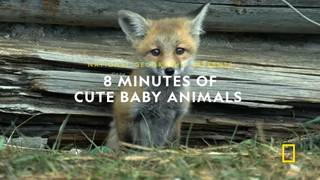
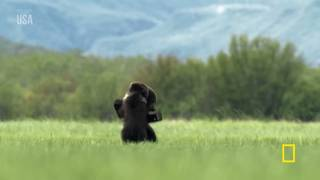
=== Step 3 Execution Feedback === [SUCCESS] Code executed in 35.37s. [Output] [VLM Q | thinking] In the first 16 frames, there are three little foxes: one stationary at the den and two running. Please identify the frames where all three are clearly visible. For those frames, describe the positions of the three foxes (stationary, running 1, running 2) relative to the frame (e.g., center, right, far right). [VLM A | thinking] Based on the provided frames, there are no frames where three little foxes are clearly visible. In frame 0, only two foxes are visible: one stationary in the den (center) and one running to the right (far right). In frames 1 and 2, only the stationary fox in the den is visible. Frames 3 through 5 show a close-up of a single fox, and the remaining frames feature different animals. Fox Analysis: Based on the provided frames, there are no frames where three little foxes are clearly visible. In frame 0, only two foxes are visible: one stationary in the den (center) and one running to the right (far right). In frames 1 and 2, only the stationary fox in the den is visible. Frames 3 through 5 show a close-up of a single fox, and the remaining frames feature different animals. [Variables] New/changed: vlm_fox_analysis: str [Inline Images] 4 image(s) attached below. Labels: [InputImages[0], InputImages[4], InputImages[8], InputImages[12]] [Tool Calls] 1 tool/VLM call(s) this step. [show() budget] 241/250 images remaining.
ReturnAnswer("A")
[ReturnAnswer] Answer submitted: A